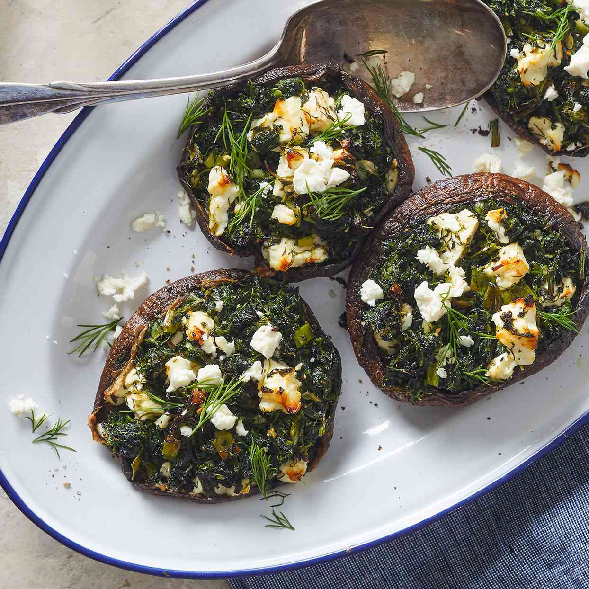

Spinach and Feta Stuffed Portobello Mushrooms
Ingredients:
- 4 portobello mushroom caps
- 1 package frozen spinach, thawed and drained
- 1/2 cup crumbled feta cheese
- 1/4 cup chopped sun-dried tomatoes
- 1/4 cup chopped onion
- 2 cloves garlic, minced
- Salt and pepper to taste
Steps:
- Preheat the oven to 375°F (190°C).
- Remove the stems from the mushrooms and scrape out the gills.
- In a bowl, mix together the spinach, feta cheese, sun-dried tomatoes, onion, garlic, salt, and pepper.
- Stuff the mushroom caps with the mixture.
- Place the mushrooms in a baking dish and bake for 25-30 minutes.
- Enjoy!